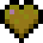

Passive Mobs
Passive mobs are harmless creatures that do not attack the player under any circumstance. They often run away from the player when the player hits them, and most of them are tamable, breedable, or useful in some way.
Passive Mobs
Passive mobs are harmless creatures that do not attack the player under any circumstance. They often run away from the player when the player hits them, and most of them are tamable, breedable, or useful in some way.
Bat
Bats are small flying ambient mobs that are found in dark places, like caverns. They squeak randomly, fly aimlessly, and hang under solid blocks.
Spawn Conditions: surrounding blocks light level of 3- and below y=63
Health: 6 hp (3 x )
Damage: 0 hp (0 x )
XP Drop: 0 XP
Loot Drops: none
Fun Fact:
Bats spawn more frequently between October 20 and November 3 as part of Halloween.
Cat
Cats are tamable mobs that come in many appearances. They are immune to fall damage, attack rabbits, chickens and baby turtles, and are able to deter creepers and phantoms. They can be tamed using raw cod or salmon, and bred by salmon. Tamed cats randomly sit on certain blocks, and can bring gifts to players while they are sleeping.
Spawn Conditions: near villages; witch huts
Health: 10 hp (5 x )
Damage: 3 hp (1.5 x ) against rabbits, chickens, and baby turtles
XP Drop: 1-3 XP when killed, 1-7 XP when bred
Loot Drops:
| string | 0-2 when killed |
| rabbit's foot | 11.29% chance while sleeping |
| rabbit hide | 11.29% chance while sleeping |
| string | 11.29% chance while sleeping |
| rotten flesh | 11.29% chance while sleeping |
| feather | 11.29% chance while sleeping |
| raw chicken | 11.29% chance while sleeping |
| phantom membrane | 2.25% chance while sleeping |
Fun Fact:
There are 2 skins that are based on real life cats; Jellie, which is based on the cat of a Minecraft YouTuber named GoodTimesWithScar, and tuxedo, which is based on the deceased cat of one of the developers named Jeb.
Chicken

Chickens are small mobs found in many places of the overworld. They aimlessly wander, with chicks following their mothers. They flap their wings when falling, slowing them enough that they do not get fall damage. They can be lured and bred using seeds.
Spawn Conditions: on grass blocks with light level of 9+; 12.5% chance from a thrown egg
Health: 4 hp (2 x )
Damage: 0 hp (0 x )
XP Drop: 1-3 XP when killed, 1-7 XP when bred
Loot Drops:
| feather | 0-2 when killed |
| raw chicken | 1 when killed w/o fire |
| cooked chicken | 1 when killed w/ fire |
| egg | 1 every 5-10 minutes |
Fun Fact:
Chickens are the only Overworld mob that can be farmed without an external item farm nor player intervention.
Cod
Cods are common fish found in oceans. They swim in schools of up to 9 fish, and can live outside of water for 10 seconds before they begin to die.
Spawn Conditions: underwater in normal, cold and lukewarm oceans in groups of 3-6
Health: 3 hp (1.5 x )
Damage: 0 hp (0 x )
XP Drop: 1-3 XP when killed
Loot Drops:
| raw cod | 1 when killed w/o fire |
| cooked cod | 1 when killed w/ fire |
| bone meal | 5% chance when killed |
Fun Fact:
When cods were initially added to the game in 18w08b, they came with 20 hp (10 x ).
Cow
Cows are common surface mobs found in grassy biomes. They randomly wander and moo, and avoid hazards that deal or dealt damage to them. They can be lured and bred using wheat.
Spawn Conditions: on grass blocks with light level of 9+ and biome that is neither snowy tundra nor wooded badlands plateaus in herds of 2-3; after sheering a mooshroom
Health: 10 hp (5 x )
Damage: 0 hp (0 x )
XP Drop: 1-3 XP when killed, 1-7 XP when bred
Loot Drops:
| leather | 0-2 when killed |
| raw beef | 1-3 when killed w/o fire |
| steak | 1-3 when killed w/ fire |
| milk bucket | 1 when milked w/ bucket |
Fun Fact:
All cows in-game have physical traits of both males (horns) and females (udders).
Donkey
Donkeys are riddable mobs that randomly roam in fields. They randomly wander, swish their tails, stand on their hind legs, and pretend to eat grass. They can vary in size depending on the age, and vary in health as well, but have constant speed and jump power. They are tamed by mounting them repeatedly until they calm down, and are bred using golden apples or golden carrots. They can equip saddles and chests.
Spawn Conditions: plains in groups of 1-3; savannas
Health: 15 hp (7.5 x ) - 30 hp (15 x )
Damage: 0 hp (0 x )
XP Drop: 1-3 XP when killed, 1-7 XP when bred
Loot Drops:
| leather | 0-2 when killed |
| chest and contents | 1 when killed w/ this item equipped |
| saddle | 1 when killed w/ this item equipped |
Fun Fact:
Donkeys were initially added with the help of DrZhark, the creator of the Mo' Creatures mod.
Fox
Foxes are nocturnal mobs found in any taiga. They flee from players and wolves, and attack chickens, rabbits, cod, salmon, tropical fish, baby turtles, and mobs attacking players they trust. They sit and sleep in the shade during the day, and approach villages at night. They can be bred using sweet berries.
Spawn Conditions: in taiga, giant tree taiga, and snowy taiga in groups of 2-4 and a small chance of spawning with an item
Health: 10 hp (5 x )
Damage: 2 hp (1 x ) aganist rabbits, chickens, cod, salmon, tropical fish and baby turtles
XP Drop: 1-2 XP when killed, 1-7 XP when bred
Loot Drops:
| item in their mouth | 100% chance being dropped |
| emerald | when killed with this equpped (1% chance) |
| rabbit's foot | when killed with this equpped (2% chance) |
| rabbit hide | when killed with this equpped (2% chance) |
| egg | when killed with this equpped (4% chance) |
| wheat | when killed with this equpped (4% chance) |
| leather | when killed with this equpped (4% chance) |
| feather | when killed with this equpped (4% chance) |
Fun Fact:
Foxes are the only mob that can jump more than 1 block high without player interferance nor potions.
Horse

Horses are riddable mobs that spawn in fields. They randomly wander, flick their tails, stand on their hind legs, and pretend to eat grass. They can vary in appearance, health, speed and jump power. They are tamed by mounting them repeatedly until they calm down, and are bred using golden apples or golden carrots. They can equip saddles and horse armor.
Spawn Conditions: in plains and savannas in herds of 2-6; inside stables and pens in villages
Health: 15 hp (7.5 x ) - 30 hp (15 x )
Damage: 0 hp (0 x )
XP Drop: 1-3 XP when killed, 1-7 XP when bred
Loot Drops:
| leather | 0-2 when killed |
| horse armor | 1 when killed w/ this item equipped |
| saddle | 1 when killed w/ this item equipped |
Fun Fact:
Horses were first added to the game as an April Fools joke feature.
Mooshroom
Mooshrooms are variants of cows that are covered in mushrooms. They come in both red mushroom and brown mushroom variants. They randomly wander and moo, and avoid hazards that deal or dealt damage to them. They can be milked with buckets and bowls, and sheared, but shearing will convert them to normal cows. They can be lured and bred using wheat.
Spawn Conditions: on mycelium with light level of 9+ in mushroom fields biomes in herds of 4-8; changes type when struck by lightning
Health: 10 hp (5 x )
Damage: 0 hp (0 x )
XP Drop: 1-3 XP when killed, 1-7 XP when bred
Loot Drops:
| leather | 0-2 when killed |
| raw beef | 1-3 when killed w/o fire |
| steak | 1-3 when killed w/ fire |
| mushroom | 5 of the same type when sheared with shears |
| milk bucket | 1 when milked w/ bucket |
| mushroom stew | 1 when milked w/ bowl |
Fun Fact:
The mooshrooms and cows were suppose to have a third sibling named "mooblooms", but due to coming in last place at the Minecon Live 2020 Mob Vote, mooblooms will not be added to the game.
Mule
Mules are riddable mobs that do not spawn naturally. They randomly wander, swish their tails, stand on their hind legs, and pretend to eat grass. They have a constant appearance but varying health. They also have varying speed and jump power, which is inherited from their parents. They are tamed by mounting them repeatedly until they calm down. They can equip saddles and chests, and cannot be bred.
Spawn Conditions: when a horse and donkey are bred
Health: 15 hp (7.5 x ) - 30 hp (15 x )
Damage: 0 hp (0 x )
XP Drop: 1-3 XP when killed
Loot Drops:
| leather | 0-2 when killed |
| chest and contents | 1 when killed w/ this item equipped |
| saddle | 1 when killed w/ this item equipped |
Fun Fact:
The incapability to breed mules is actually a portrayal of the fact that mules in real life are actually sterile.
Ocelot
Ocelots are rare mobs that are only found in jungles. They are immune to fall damage, sprint away from players, stalk and kill chickens and baby turtles, and deter creepers and phantoms. The player can gain their trust by feeding them raw cod or salmon. Trusting ocelots can be bred using raw cod or salmon.
Spawn Conditions: on grass blocks and leaves at y=63 in jungles in groups of 1-2
Health: 10 hp (5 x )
Damage: 3 hp (1.5 x ) against chickens, and baby turtles
XP Drop: 1-3 XP when killed, 1-7 XP when bred
Loot Drops: none
Fun Fact:
Tamed ocelots used to turn into cats, but after 18w44a, cats and ocelots have been separated into their own separate mobs.
Parrot
Parrots are rare small birds found in jungles. They come in 5 variants, fly, dance, crowd around nearby mobs, and imitate nearby neutral and hostile mobs. They can be tamed using seeds, and tamed parrots can perch on the player's shoulder. Feeding parrots with cookies will instantly kill them.
Spawn Conditions: on logs, leaves and grass blocks in y=70+ in jungles in groups of 1-2
Health: 6 hp (3 x )
Damage: 0 hp (0 x )
XP Drop: 1-3 XP when killed
Loot Drops:
| feather | 1-2 when killed |
Fun Fact:
The 5 variants are based from real-life species; Scarlet macaw for the red one, Hyacinth macaw for the blue one, Southern mealy parrot for the green one, Blue-and-Gold macaw for the cyan one, and Cockatiel for the grey one.
Pig
Pigs are small riddable common surface mobs found in grassy biomes. They randomly wander and oink, and avoid hazards that deal or dealt damage to them. They can be controled by placing a saddle on them and riding with a carrot on a stick. They can be lured and bred using carrots, potatoes, or beetroots.
Spawn Conditions: on grass blocks with light level of 7+ and biome that is grassy but neither snowy tundra nor wooded badlands plateaus in groups of 1-4; inside pens and stables in villages
Health: 10 hp (5 x )
Damage: 0 hp (0 x )
XP Drop: 1-3 XP when killed, 1-7 XP when bred
Loot Drops:
| raw porkchop | 1-3 when killed w/o fire |
| coocked porkchop | 1-3 when killed w/ fire |
| saddle | 1 when killed w/ this item equipped |
Fun Fact:
Pigs are the oldest passive mob that are still in the game.
Pufferfish
Pufferfish are defensive mobs that spawn in oceans. They inflate and inflict damage when a player or a mob approaches them, dealing poison damage. They are the only fish type that swims alone.
Spawn Conditions: in warm, lukewarm and deep lukewarm ocean biomes in groups of 1-3
Health: 3 hp (1.5 x )
Damage: 2 hp (1 x ) + 1 hp (0.5 x ) every 1.25 sec for 5 sec
XP Drop: 1-3 XP when killed
Loot Drops:
| pufferfish | 1 when killed |
| bone meal | 5% chance when killed |
Fun Fact:
Pufferfish are the only minecraft passive mob that can passively kill the player.
Rabbit
Rabbits are small uncommon mobs that come in different varieties depending on the biome. They randomly hop around, and run away from nearby players and wolves. They can be lured using carrots or dandelions, and bred using carrots, dandelions, or golden carrots.
Spawn Conditions: on grass block, sand, and snow in desert, flower forest, taiga, giant tree taiga, snowy taiga, frozen river, and snowy tundra biomes
Health: 3 hp (1.5 x )
Damage: 0 hp (0 x )
XP Drop: 1-3 XP when killed, 1-7 XP when bred
Loot Drops:
| rabbit hide | 0-1 when killed |
| raw rabbit | 0-1 when killed w/o fire |
| cooked rabbit | 0-1 when killed w/ fire |
| rabbit's foot | 10% chance when killed |
Fun Fact:
Naming a rabbit to "Toast" using a nametag will change its skin to a specific pattern and color palette. This is a memorial to the missing rabbit of xyzen420's girlfriend.
Salmon
Salmons are common fish found in rivers and low-temperature oceans. They swim in schools of up to 7 fish, and can swim up 4 to 5 blocks in waterfalls.
Spawn Conditions: underwater in cold oceans, frozen oceans, rivers and frozen rivers in groups of 1-5
Health: 3 hp (1.5 x )
Damage: 0 hp (0 x )
XP Drop: 1-3 XP when killed
Loot Drops:
| raw salmon | 1 when killed w/o fire |
| cooked salmon | 1 when killed w/ fire |
| bone meal | 5% chance when killed |
Fun Fact:
Their capability to swim up waterfalls reflects their capability to leap above waterfalls in real life to reach the streams they were born in.
Sheep
Sheep are common surface mobs found in grassy biomes. They roam in flocks of up to 4, and avoid hazards that deal or dealt damage to them. Their wool can be dyed and sheared, which regrows when they eat a grass block. They can be lured and bred using wheat.
Spawn Conditions: on grass blocks with light level of 7+ and biome that is neither snowy tundra nor wooded badlands plateaus in groups of 2-3; inside pens and stables in villages
Health: 8 hp (4 x )
Damage: 0 hp (0 x )
XP Drop: 1-3 XP when killed, 1-7 XP when bred
Loot Drops:
| raw mutton | 1-2 when killed w/o fire |
| cooked mutton | 1-2 when killed w/ fire |
| wool of matching color | 1 when killed while not sheared |
| wool of matching color | 1-3 when sheared with shears |
Fun Fact:
Naming a sheep "jeb_" using a nametag will cause its wool to cycle through all the dye colors. Attempting to shear or kill this sheep will only drop its original wool color.
Skeleton Horse

Skeleton horses are rare riddable mobs that only spawn during thunderstorms. When spawning, they often come in groups of 4 with special skeletons riding them. They act similarly to normal horses, and have constant appearance, health and speed, but varying jump power. They are already tamed when they spawn in survival, and cannot be bred.
Spawn Conditions: part of skeleton trap during thunderstorms
Health: 15 hp (7.5 x )
Damage: 0 hp (0 x )
XP Drop: 1-3 XP when killed
Loot Drops:
| bone | 0-2 when killed |
| saddle | 1 when killed w/ this item equipped |
Fun Fact:
The skeleton trap is said to be a reference to the Horsemen of the Apocalypse, 4 biblical figures found in the Book of Revelation.
Squid
Squid are ambient mobs found in water. They swim around, even against the current, opening and closing their tentacles as they do. When attacked, they produce a cloud of black ink and swim away.
Spawn Conditions: on the surface of a water block between y=46 to y=63 in an ocean or river biomes in groups of 2-4
Health: 10 hp (5 x )
Damage: 0 hp (0 x )
XP Drop: 1-3 XP when killed
Loot Drops:
| ink sac | 1-3 |
Fun Fact:
Squid are the first passive mob to spawn in water at any light level.
Strider

Striders are riddable mobs found only in the Nether. They can walk on lava, shiver and desaturate when outside lava, and get damaged by water. They can be controlled by placing a saddle on them and riding with a warped fungus on a stick. They can be lured and bred using warped fungus.
Spawn Conditions: on lava that are 2 blocks tall and with air above in the nether dimension in groups of 2-4
Health: 20 hp (10 x )
Damage: 0 hp (0 x )
XP Drop: 1-2 XP when killed, 1-7 XP when bred
Loot Drops:
| string | 0-5 when killed |
| saddle | 1 when killed w/ this item equipped |
Fun Fact:
Striders are the only true passive mob that naturally spawn in the nether, and are the only nether mob that can spawn in any biome.
Tropical Fish

Tropical fish are common fish found in oceans. They swim in schools of up to 9 fish, and come in varying sizes, patterns and colors.
Spawn Conditions: underwater in lukewarm, deep lukewarm, and warm oceans in groups of 8
Health: 3 hp (1.5 x )
Damage: 0 hp (0 x )
XP Drop: 1-3 XP when killed
Loot Drops:
| tropical fish | 1 when killed |
| bone meal | 5% chance when killed |
Fun Fact:
Tropical fish have 3,584 possible variants, with 22 of them being reference to real-life species of fish.
Turtle
Turtles are common mobs found near beaches. They randomly wander, moving slowly in land but swimming fast in water. They have a home beach, which is where they are born and they lay eggs of up to 4. They can be tamed and bred using seagrass.
Spawn Conditions: on sand with light level of 8+ between y=62 and y=66 in warm beaches
Health: 30 hp (15 x )
Damage: 0 hp (0 x )
XP Drop: 1-3 XP when killed, 1-7 XP when bred
Loot Drops:
| seagrass | 0-2 when killed |
| bowl | 1 when killed w/ lightning |
| scute | 1 when baby turtle grows up |
Fun Fact:
Baby turtles are the smallest mob in game.
Villager
Villagers are humanoid mobs that live in villages. They work with a schedule, wander around the village, socialize with other villagers, go indoors when needed, and sleep at night. Baby villagers may play around and jump on beds in addition to those. They flee from zombified mobs and illagers, and can trade with players using emeralds. Their appearance may vary depending on their biome and profession.
Spawn Conditions: in villages; in igloo basements; when a zombie villager is cured
Health: 20 hp (10 x )
Damage: 0 hp (0 x )
XP Drop: 3-6 XP when killed, 8-11 XP when bred
Loot Drops:
| helmet | 1 when killed w/ this item equipped |
| chestplate | 1 when killed w/ this item equipped |
| leggings | 1 when killed w/ this item equipped |
| boots | 1 when killed w/ this item equipped |
Fun Fact:
When villagers were initially added, they were named "TESTIFICATE" and had the AI of a pig.
Wandering Trader

Wandering Traders are humanoid mobs that randomly spawn near the player. They always bring with them 2 llamas, and offer 6 random trades. They drink an invisibility potion when it is turning night time, and drink milk when it's almost day. They flee from zombified mobs and illagers, and run away and drink invisibility potions when they are hurt. They despawn after 40-60 minutes.
Spawn Conditions: randomly within 48 blocks from the player
Health: 20 hp (10 x )
Damage: 0 hp (0 x )
XP Drop: 0 XP
Loot Drops:
| milk bucket | 8.5% chance when killed while holding said item |
| potion of invisibility | 8.5% chance when killed while holding said item |
| lead | 0-2 when killed, depending on number of llamas they are leading |
Fun Fact:
Wandering traders sometimes form caravans of llamas on accident.